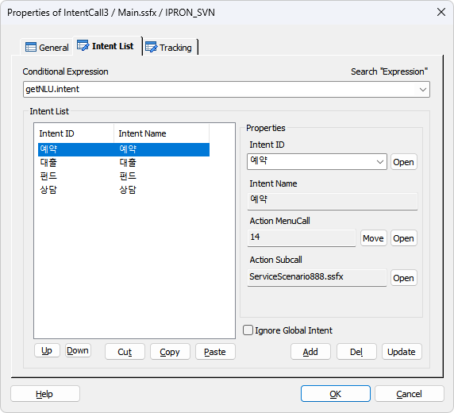
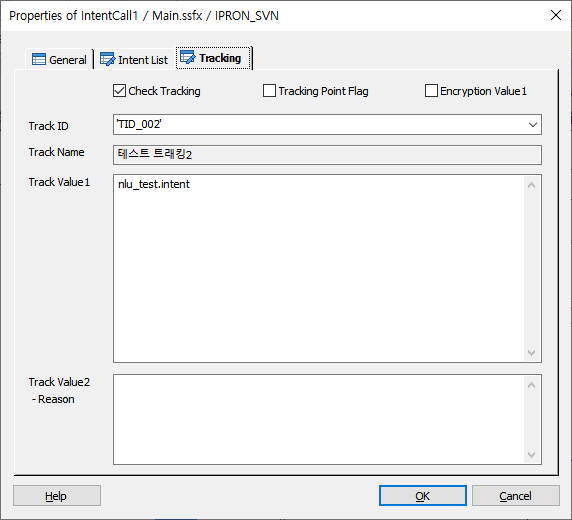

NLURequest 아이템에서 분석된 Intent 를 비교하여 해당 DefineIntent 에 지정된 Action SubCall 을 호출 한다.
DefineIntent 로 정의된 Intent ID 를 리스트에 지정하여 분기할 Intent Action 을 한정할 수 있다.
ICON

PROPERTIES
 Intent List
Intent List

Conditional Expression : NLUReqeust 에서 분석된 Intent 를 입력 합니다.(@name.intent)
Intent List
· DefineIntent 에 정의된 Intent ID 를 지정 하여 NLURequest 에서 분석된 Intent 와 Intent Name을 비교하여 IntentCall 아이템이 있는 시나리오에 따라 지정된 메뉴 또는 시나리오를 호출 합니다.
Intent ID : DefineIntent 에 정의된 Intent ID 입니다.
Open Button : DefineIntent 아이템으로 이동 합니다.
Intent Name : NLU 에서 분석된 Intent 와 비교시 사용 됩니다.
Action MenuCall : DefineIntent 아이템의 Action MenuCall 에 지정된 메뉴로 MenuCall 로 호출됩니다.
Action Subcall : DefineIntent 아이템의 Action SubCall 에 지정된 시나리오로 SubCall 로 호출됩니다.
- 빌드 시 SubCall 호출 태그 생성 시에 In Param 으로 NLURequest 아이템의 Intent 변수(@name.intent) 를 자동 생성 합니다.
- 호출 되는 시나리오의 Start 아이템 태그의 In Param 으로는 P_IN_INTENT 라는 변수로 자동 생성 하여 시나리오에서 참조 할 수 있도록 합니다.
Open Button : DefineIntent 아이템의 Action SubCall 에 지정된 시나리오를 오픈합니다.
※ Action MenuCall, Action SubCall 로 분기하는 기준은 IntentCall 아이템이 있는 현재 시나리오의 타입에 따라서 분기가 됩니다.(.ssfx 는 SubCall, .msfx 는 MenuCall)
※ Intent List에 있는 Intent ID로 직접적인 링크가 된 경우는 Action SubCall에 지정된 시나리오로 SubCall 호출이 아니라 링크된 아이템으로 분기 합니다.
Ignore Global Intent : 체크 되면 Global Intent 가 지정되어 있어도 체크 및 분기 하지 않습니다.
체크 안되면 NLU 분석 결과가 Intent인 경우 Global Intent로 설정된 Intent Name 을 비교하여 해당 메뉴 또는 시나리오로를 호출 하고 이 후 리턴 된 후 IntentCall 아이템은 종료됩니다.
 Tracking
Tracking

IntentCall 에 대한 사용자 트래킹을 처리합니다.(단, IntentCall 은 특정 태그가 있는 것이 아니라 SubCall로 지정된 시나리오를 호출 하거나 링크된 아이템으로 분기 하기 때문에 IntentCall 아이템이 호출 되었다를 표시 하는 트래킹 입니다.)
Check Tracking Check Box : Tracking을 사용 할 것인지를 체크합니다.
Tracking Point Flag Check Box : 특별한 Tracking Flag를 설정하여 SWAT에서 트래킹 시에 이 플래그가 설정된 항목만 트래킹 할 수 있습니다.
Encryption Value1 Check Box : Track Value1 속성 데이터에 대해서 암호화 처리를 합니다.
Track ID : 정의한 Track ID를 선택하거나 입력 합니다.
- DefineTrack Item에 정의된 Track ID가 콤보박스 리스트로 제공됩니다.(Type이 없거나, IntentCall인 경우)
Track Name : Track ID를 선택하면 같이 정의된 이름을 출력합니다.(SWAT에서 이 이름으로 트랙킹 시에 사용합니다.)
Track Value1 : 트래킹 시에 사용할 값을 입력 합니다.(값이 없으면 요청하는 Page 이름이 기본 값이 됩니다.)
Track Value2 :트래킹 시에 사용할 값을 입력 합니다.(결과에 대한 Reason값)
RESULT
· 처리 결과 세션 변수
session.command.result : 처리 성공(_SLEE_SUCCESS_), 실패(_SLEE_FAILED_)
session.command.reason : 실패면 실패 오류코드(시스템 상수 참조)
RELATED